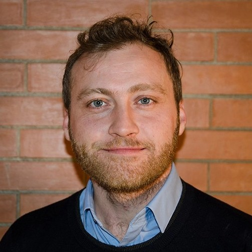
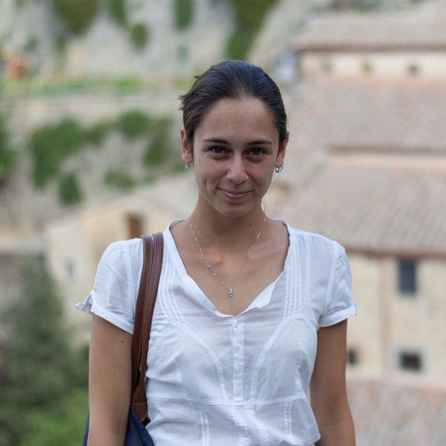
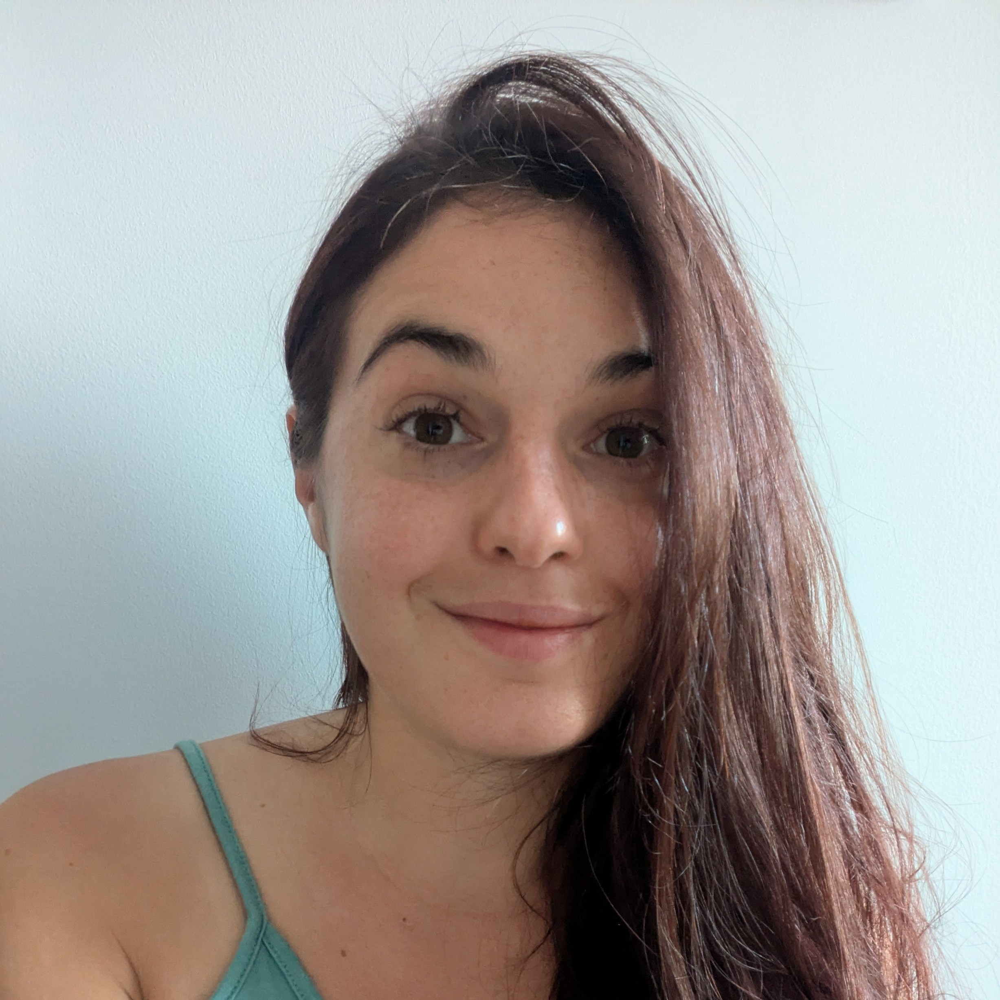
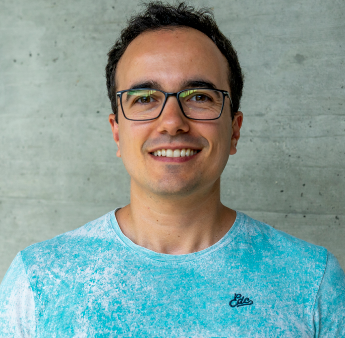
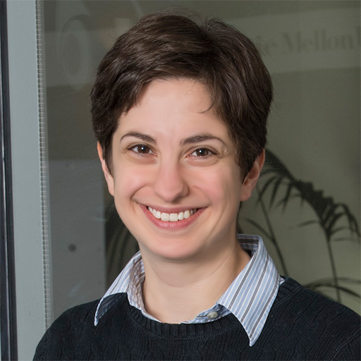
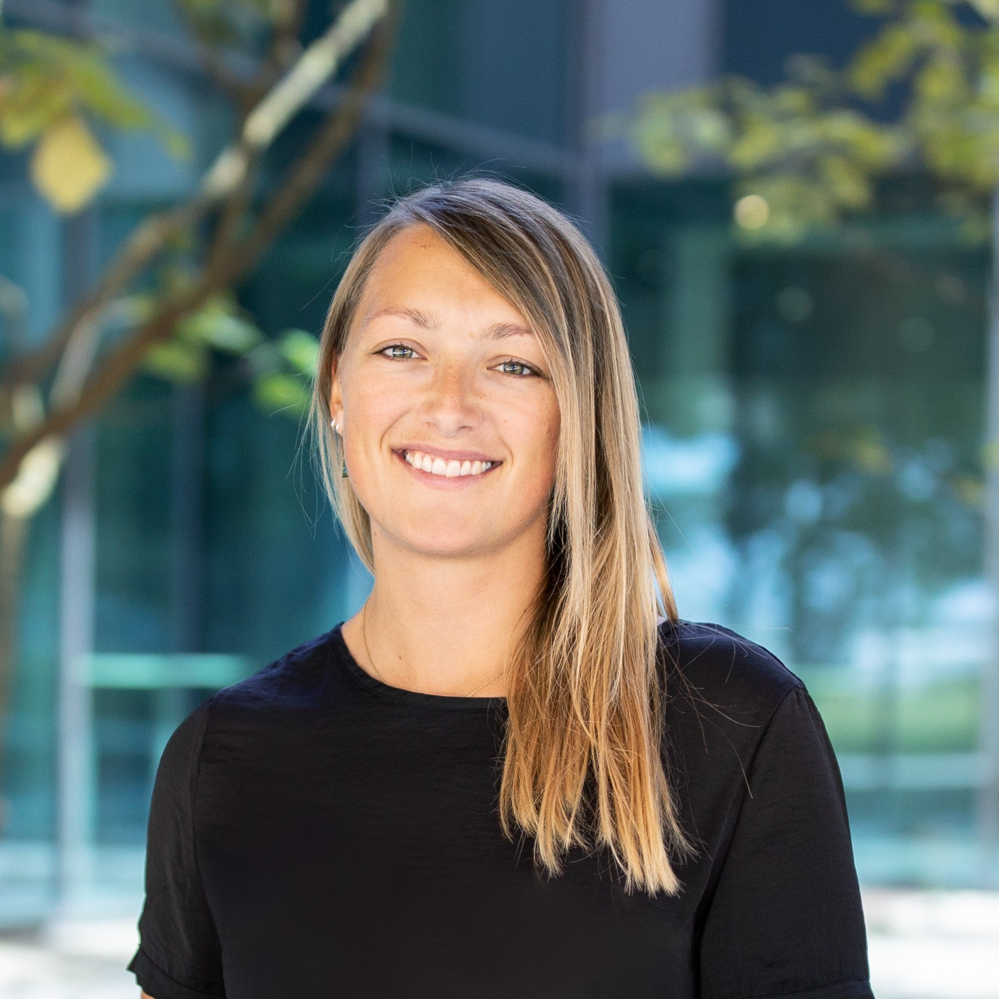
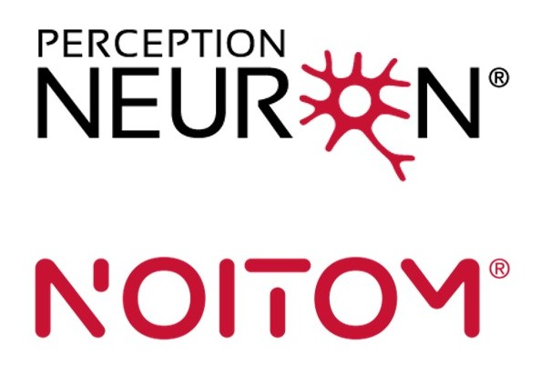
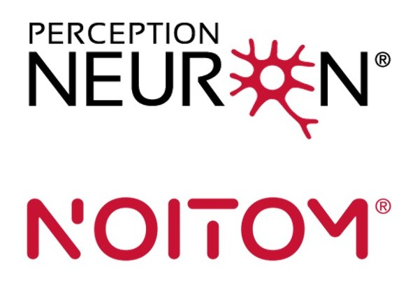
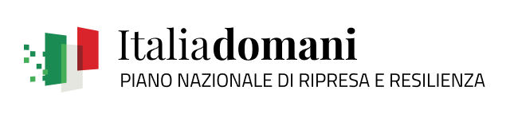

Abstract |
Organizers |
Schedule |
Invited speakers |
Panel session |
Question box |
Sponsors |
Contact

Shared Autonomy and Sense of Agency
(SASA)
2025 IROS Half-day Workshop
October 24th, 2025
13:00-17:00, Room 404
Abstract
Shared autonomy is revolutionizing Human-Robot interaction by seamlessly blending human intent with robot abilities.
This paradigm holds the potential to enhance user performance and experience across various applications, from remote manipulation to assistive technologies, like prostheses.
However, a critical challenge remains: how can we modulate robot autonomy to reduce user effort while preserving the user's sense of agency?
This workshop seeks to address this question by providing an overview about the link between shared autonomy and the sense of agency, starting from neuroscientific foundations and covering various application fields that share the common aspect of controlling external elements (prosthetics, teleoperation, etc.).
To address this, the workshop aims to explore four key aspects:
To address this, the workshop aims to explore four key aspects:
- Understanding sense of agency and embodiment: Which are the neuroscientific bases underlying the concepts of sense of agency, embodiment, and ownership?
- Understanding shared autonomy: What is shared autonomy?
- Insight into how shared autonomy affects agency: How does shared autonomy between humans and robotic agents influence the sense of agency?
- Promoting sense of agency through the sensory feedback: How can communication channels be effectively leveraged to enhance situational awareness, reduce cognitive load, and create a more natural control experience?
Organizers

Marco Controzzi
Associate Professor
Sant'Anna School of Advanced Studies

Dylan Losey
Assistant Professor
Virginia Tech

Ahmed Shehata
Canada Research Chair
University of New Brunswick

Manuela Uliano
PhD Student
Sant'Anna School of Advanced Studies

Silvia Fattorini
PhD Student
Sant'Anna School of Advanced Studies
Schedule
| Time | Topic | Speaker |
|---|---|---|
| 13:00 - 13:10 | Welcoming remarks | |
| 13:10 - 13:40 | First talk + Q&A | Wen Wen |
| 13:40 - 14:10 | Second talk + Q&A | Sara Falcone |
| 14:10 - 14:40 | Third talk + Q&A | João Silvério |
| 14:40 - 15:05 | Fourth talk + Q&A | Henny Admoni |
| 15:05 - 15:35 | Coffee break and Poster session | |
| 15:35 - 16:05 | Fifth talk + Q&A | Strahinja Dosen |
| 16:05 - 16:45 | Panel session | |
| 16:45 - 16:50 | Closing remarks | |
| 16:50 - 17:00 | Sponsors presentation and Poster awards |
Invited speakers
Four invited talks by leading experts in fields such as neuroscience and robotics will cover state-of-the-art topics related to the relationship between autonomy and agency in Human-Robot interaction. At the end of each talk, Q&A sessions will facilitate immediate discussion on the key points covered by the speakers.
Wen Wen
Associate Professor
University of Rikkyo
Talk title:
"The Sense of Agency in Human-Robot Interaction: Perspectives and Insights from Cognitive Psychology"
Speaker bio:
Wen received her Ph.D. in Psychology from the University of Tokyo and has held research positions at institutions including Keio University, University College London, and the University of Tokyo. She is currently an Associate Professor of Psychology at Rikkyo University in Tokyo, Japan. Her research focuses on the sense of agency, body consciousness, and human-machine interaction, integrating experimental psychology with computational modeling approaches. She has published widely on how individuals perceive control over their actions and how this perception is influenced by sensory, cognitive, and contextual factors. In recent years, her work has expanded to investigate the computational modelling of body consciousness considering individual differences. She is also actively involved in interdisciplinary collaborations bridging cognitive science, robotics, and rehabilitation.
Wen received her Ph.D. in Psychology from the University of Tokyo and has held research positions at institutions including Keio University, University College London, and the University of Tokyo. She is currently an Associate Professor of Psychology at Rikkyo University in Tokyo, Japan. Her research focuses on the sense of agency, body consciousness, and human-machine interaction, integrating experimental psychology with computational modeling approaches. She has published widely on how individuals perceive control over their actions and how this perception is influenced by sensory, cognitive, and contextual factors. In recent years, her work has expanded to investigate the computational modelling of body consciousness considering individual differences. She is also actively involved in interdisciplinary collaborations bridging cognitive science, robotics, and rehabilitation.
Talk abstract:
As robots become increasingly integrated into our daily lives, understanding how humans perceive control and agency in interactions with these systems is crucial. This talk explores the sense of agency—our experience of controlling our actions and their outcomes—in the context of human-robot interaction (HRI). Drawing on insights from cognitive psychology, I will discuss how classical paradigms for measuring agency can be adapted to HRI settings, and what these adaptations reveal about human expectations, attribution of responsibility, and the boundaries between self and other in shared control scenarios. In addition, I will examine how individual differences—such as cognitive style, motor expertise, or prior experience with technology—shape agency judgments in HRI, leading to variability in how people adapt to and collaborate with robotic systems. Finally, I will consider the implications of agency research for the ethical and effective deployment of autonomous systems, and outline future directions for integrating psychological theory into HRI design.
As robots become increasingly integrated into our daily lives, understanding how humans perceive control and agency in interactions with these systems is crucial. This talk explores the sense of agency—our experience of controlling our actions and their outcomes—in the context of human-robot interaction (HRI). Drawing on insights from cognitive psychology, I will discuss how classical paradigms for measuring agency can be adapted to HRI settings, and what these adaptations reveal about human expectations, attribution of responsibility, and the boundaries between self and other in shared control scenarios. In addition, I will examine how individual differences—such as cognitive style, motor expertise, or prior experience with technology—shape agency judgments in HRI, leading to variability in how people adapt to and collaborate with robotic systems. Finally, I will consider the implications of agency research for the ethical and effective deployment of autonomous systems, and outline future directions for integrating psychological theory into HRI design.

Sara Falcone
Assistant Professor
Pace University
Talk title:
"A Multidisciplinary Investigation to Unravel the Complexity of the Sense of Embodiment in Teleoperation"
Speaker bio:
Sara Falcone is an Assistant Professor at the Seidenberg School of Computer Science and Information Systems, Pace University. Her research focuses on human-machine interaction, teleoperation, and embodied cognition, with an emphasis on how perceptual and control factors shape the sense of embodiment in robotic and virtual systems. Her work integrates experimental methodologies, full-body motion capture, and immersive environments to study how multimodal feedback and shared autonomy affect user performance and experience. She holds a Ph.D. in Electrical Engineering, Mathematics, and Computer Science from the University of Twente (in collaboration with TNO), and a Master’s in Cognitive Science with a specialization in Human-Machine Interaction from the Center of Mind/Brain Sciences, University of Trento. Her interdisciplinary work aims to inform the design of embodied systems that support motor learning, accessibility, and intuitive human-machine collaboration.
Sara Falcone is an Assistant Professor at the Seidenberg School of Computer Science and Information Systems, Pace University. Her research focuses on human-machine interaction, teleoperation, and embodied cognition, with an emphasis on how perceptual and control factors shape the sense of embodiment in robotic and virtual systems. Her work integrates experimental methodologies, full-body motion capture, and immersive environments to study how multimodal feedback and shared autonomy affect user performance and experience. She holds a Ph.D. in Electrical Engineering, Mathematics, and Computer Science from the University of Twente (in collaboration with TNO), and a Master’s in Cognitive Science with a specialization in Human-Machine Interaction from the Center of Mind/Brain Sciences, University of Trento. Her interdisciplinary work aims to inform the design of embodied systems that support motor learning, accessibility, and intuitive human-machine collaboration.
Talk Abstract:
What makes us feel that we are the ones acting, especially when control happens at a distance, through a machine? This talk explores how humans experience the sense of embodiment, particularly agency and ownership, in remote and robotic systems. Drawing on experimental work in teleoperation and human-robot interaction, we will examine how design choices - such as the degree of autonomy, type of control interface, and availability of sensory feedback - can shape these experiences. In systems where control is shared between a human and an autonomous agent, a careful balance is required to maintain the user’s sense of agency. The talk will also highlight how sensory feedback channels - visual, proprioceptive, or haptic - can be used to support situational awareness, reduce cognitive load, and create a more natural and intuitive sense of control. This research contributes to the design of robotic systems that not only function effectively, but also feel meaningfully connected to the human operator.
What makes us feel that we are the ones acting, especially when control happens at a distance, through a machine? This talk explores how humans experience the sense of embodiment, particularly agency and ownership, in remote and robotic systems. Drawing on experimental work in teleoperation and human-robot interaction, we will examine how design choices - such as the degree of autonomy, type of control interface, and availability of sensory feedback - can shape these experiences. In systems where control is shared between a human and an autonomous agent, a careful balance is required to maintain the user’s sense of agency. The talk will also highlight how sensory feedback channels - visual, proprioceptive, or haptic - can be used to support situational awareness, reduce cognitive load, and create a more natural and intuitive sense of control. This research contributes to the design of robotic systems that not only function effectively, but also feel meaningfully connected to the human operator.

João Silvério
Senior Researcher and Group Leader
German Aerospace Center (DLR)
Talk title:
"Shared Control Templates for Assistive Robots"
Speaker bio:
João Silvério is a senior researcher and group leader at the German Aerospace Center (DLR) in Munich, where he leads the Interactive Skill Learning group since 2022. He received a PhD in Robotics from the Italian Institute of Technology (IIT), Genoa, in 2017. From 2017 to 2019, he was a postdoctoral researcher at IIT, and from 2019 to 2022, he held a postdoctoral position at the Idiap Research Institute in Martigny, Switzerland. His research focuses on machine learning for robotics, with particular interest in learning for control, imitation learning, and reinforcement learning.
João Silvério is a senior researcher and group leader at the German Aerospace Center (DLR) in Munich, where he leads the Interactive Skill Learning group since 2022. He received a PhD in Robotics from the Italian Institute of Technology (IIT), Genoa, in 2017. From 2017 to 2019, he was a postdoctoral researcher at IIT, and from 2019 to 2022, he held a postdoctoral position at the Idiap Research Institute in Martigny, Switzerland. His research focuses on machine learning for robotics, with particular interest in learning for control, imitation learning, and reinforcement learning.
Talk Abstract:
A key challenge in assistive robotics is enabling users to quickly and effectively bootstrap new robot assistive behaviors -- something that can be facilitated by combining prior knowledge with data-driven methods. Such prior knowledge can take various forms depending on the task -- ranging from constraints (e.g., “hold a cup upright if it is not empty”) to object-centered behaviors (e.g., “provide more assistance near the task goal”). In this talk, I’ll present the concept of Shared Control Templates (SCTs) -- a structured framework for embedding such priors into robot behavior through virtual fixtures. SCTs enable the intuitive specification of task-phase-dependent constraints and mappings between input devices and robot motions. They also support learning these constraints from data and, crucially, allow non-expert users to define and modify assistance in personalized and adaptive ways. I will also show how SCTs played a key role in DLR’s Cybathlon-winning system in the 2024 Assistant Robot Race, highlighting their real-world impact on intuitive and flexible human-robot collaboration.
A key challenge in assistive robotics is enabling users to quickly and effectively bootstrap new robot assistive behaviors -- something that can be facilitated by combining prior knowledge with data-driven methods. Such prior knowledge can take various forms depending on the task -- ranging from constraints (e.g., “hold a cup upright if it is not empty”) to object-centered behaviors (e.g., “provide more assistance near the task goal”). In this talk, I’ll present the concept of Shared Control Templates (SCTs) -- a structured framework for embedding such priors into robot behavior through virtual fixtures. SCTs enable the intuitive specification of task-phase-dependent constraints and mappings between input devices and robot motions. They also support learning these constraints from data and, crucially, allow non-expert users to define and modify assistance in personalized and adaptive ways. I will also show how SCTs played a key role in DLR’s Cybathlon-winning system in the 2024 Assistant Robot Race, highlighting their real-world impact on intuitive and flexible human-robot collaboration.

Henny Admoni
Associate Professor
Carnegie Mellon University
Talk title:
"The Sense of Agency in Assistive Robotics Using Shared Autonomy"
Speaker bio:
Henny Admoni is an Associate Professor in the Robotics Institute at Carnegie Mellon University, where she leads the Human And Robot Partners (HARP) Lab. Dr. Admoni studies how to develop intelligent robots that can assist and collaborate with humans on complex tasks like preparing a meal. She is most interested in how natural human communication, like where someone is looking, can reveal underlying human intentions and can be used to improve human-robot interactions. Previously, Dr. Admoni was a postdoctoral fellow at CMU with Siddhartha Srinivasa in the Personal Robotics Lab. She completed her PhD in Computer Science at Yale University with Professor Brian Scassellati in the Social Robotics Lab. Her PhD dissertation was about modeling the complex dynamics of nonverbal behavior for socially assistive human-robot interaction. Dr. Admoni also holds an MS in Computer Science from Yale University, and a BA/MA joint degree in Computer Science from Wesleyan University.
Henny Admoni is an Associate Professor in the Robotics Institute at Carnegie Mellon University, where she leads the Human And Robot Partners (HARP) Lab. Dr. Admoni studies how to develop intelligent robots that can assist and collaborate with humans on complex tasks like preparing a meal. She is most interested in how natural human communication, like where someone is looking, can reveal underlying human intentions and can be used to improve human-robot interactions. Previously, Dr. Admoni was a postdoctoral fellow at CMU with Siddhartha Srinivasa in the Personal Robotics Lab. She completed her PhD in Computer Science at Yale University with Professor Brian Scassellati in the Social Robotics Lab. Her PhD dissertation was about modeling the complex dynamics of nonverbal behavior for socially assistive human-robot interaction. Dr. Admoni also holds an MS in Computer Science from Yale University, and a BA/MA joint degree in Computer Science from Wesleyan University.
Talk Abstract:
Sense of agency is a factor that influences people’s preferences for robot assistance, and refers to the experience of control over one’s environment. However, in assistive robotics, many paradigms optimize measures like task success and cognitive load, rather than agency. Prior work has found that participants sometimes prefer paradigms, such as direct teleoperation, which may not perform well on these metrics but give more control to the user. This talk will present research on the paradigm of shared autonomy, in which the system combines control signals from the user and the automated control. Results from a study evaluating sense of agency show that higher robot autonomy improves task performance but reduces the user’s sense of agency, highlighting a potential trade-off between performance and agency. The talk will also discuss the relationship between sense of agency and optimality, introducing a proxy metric for a component of sense of agency that could enable systems to monitor and maintain agency in real time.
Sense of agency is a factor that influences people’s preferences for robot assistance, and refers to the experience of control over one’s environment. However, in assistive robotics, many paradigms optimize measures like task success and cognitive load, rather than agency. Prior work has found that participants sometimes prefer paradigms, such as direct teleoperation, which may not perform well on these metrics but give more control to the user. This talk will present research on the paradigm of shared autonomy, in which the system combines control signals from the user and the automated control. Results from a study evaluating sense of agency show that higher robot autonomy improves task performance but reduces the user’s sense of agency, highlighting a potential trade-off between performance and agency. The talk will also discuss the relationship between sense of agency and optimality, introducing a proxy metric for a component of sense of agency that could enable systems to monitor and maintain agency in real time.
Strahinja Dosen
Professor
Aalborg University
Talk title:
"Shared Control and Sensory Feedback in Bionic Limbs"
Speaker bio:
Strahinja Dosen received the Diploma of Engineering in Electrical Engineering and the M.Sc. degree in Biomedical Engineering in 2000 and 2004, respectively, from the Faculty of Technical Sciences, University of Novi Sad, Serbia, and the Ph.D. degree in Biomedical Engineering from the Center for Sensory-Motor Interaction, Aalborg University, Denmark, in 2009. From 2011 to 2017, he worked as a Research Scientist at the Institute for Neurorehabilitation Systems, University Medical Center Gottingen, Germany, and then as an Associate Professor at the Department of Health Science and Technology (HST), Aalborg University (AAU). Currently, he is a Full Professor in the same Department and leads a research group on Neurorehabilitation Systems. Prof. Dosen was a principal investigator for AAU and HST in several EU (Tactility, Wearplex, Sixthsense, and SimBionics) and nationally funded (Robin, Remap, Climb, NeuroMate) projects. He published more than 120 manuscripts in peer-reviewed journals, and his main research interest is the closed-loop control of assistive robotic systems.
Strahinja Dosen received the Diploma of Engineering in Electrical Engineering and the M.Sc. degree in Biomedical Engineering in 2000 and 2004, respectively, from the Faculty of Technical Sciences, University of Novi Sad, Serbia, and the Ph.D. degree in Biomedical Engineering from the Center for Sensory-Motor Interaction, Aalborg University, Denmark, in 2009. From 2011 to 2017, he worked as a Research Scientist at the Institute for Neurorehabilitation Systems, University Medical Center Gottingen, Germany, and then as an Associate Professor at the Department of Health Science and Technology (HST), Aalborg University (AAU). Currently, he is a Full Professor in the same Department and leads a research group on Neurorehabilitation Systems. Prof. Dosen was a principal investigator for AAU and HST in several EU (Tactility, Wearplex, Sixthsense, and SimBionics) and nationally funded (Robin, Remap, Climb, NeuroMate) projects. He published more than 120 manuscripts in peer-reviewed journals, and his main research interest is the closed-loop control of assistive robotic systems.
Talk Abstract:
The lecture will start by introducing the concept of shared control in bionic limbs, focusing on upper limb prosthetics. We will illustrate this concept by showing some prototypes and demonstrating how this approach can be used to improve performance while decreasing the cognitive and physical load of controlling a prosthesis, especially in the case of advanced systems with many degrees of freedom. However, despite these benefits, enhancing a bionic limb with automatic functions that might not be directly related to user intentions could “break” the sense of agency and ownership. We hypothesize that this risk can be mitigated by providing the user with carefully designed artificial sensory feedback. We will give some examples of how sensory feedback was employed in existing prototypes using different interfaces, from visual to haptic. The lecture will finish by discussing how feedback can be designed to maximize both performance and user experience.
The lecture will start by introducing the concept of shared control in bionic limbs, focusing on upper limb prosthetics. We will illustrate this concept by showing some prototypes and demonstrating how this approach can be used to improve performance while decreasing the cognitive and physical load of controlling a prosthesis, especially in the case of advanced systems with many degrees of freedom. However, despite these benefits, enhancing a bionic limb with automatic functions that might not be directly related to user intentions could “break” the sense of agency and ownership. We hypothesize that this risk can be mitigated by providing the user with carefully designed artificial sensory feedback. We will give some examples of how sensory feedback was employed in existing prototypes using different interfaces, from visual to haptic. The lecture will finish by discussing how feedback can be designed to maximize both performance and user experience.
Panel session
After the four invited talks, a dedicated panel will encourage a broader and more in-depth exchange of ideas, driven by audience questions and interactions. In addition to the four invited speakers, an additional researcher will take part in the panel session, enriching the discussion with their diverse perspectives and expertise:

Annette Hagengruber
Team leader
German Aerospace Center (DLR)
Question box
Discussion and exchange of ideas will be actively encouraged throughout the workshop, both through Q&A sessions after each talk and during the final panel discussion. All participants are warmly invited to take part in the conversation by asking questions.
If you already have a question or a topic related to the workshop themes that you’d like to discuss, feel free to write it below!
Sponsors
The SASA Workshop @ IROS 2025 is supported by:
- The IEEE-RAS Technical Committee for Telerobotics.
- The IEEE-RAS Technical Committee on BioRobotics.
- Prensilia SRL.
- Perception Neuron (registered trademark of Noitom Ltd).
 

Contact
For any questions or further information, please feel free to contact us via email.


We acknowledge the support of the European Union by the Next Generation EU project ECS00000017 ‘Ecosistema dell’Innovazione’ Tuscany Health Ecosystem (THE, PNRR, Spoke 4: Spoke 9: Robotics and Automation for Health).